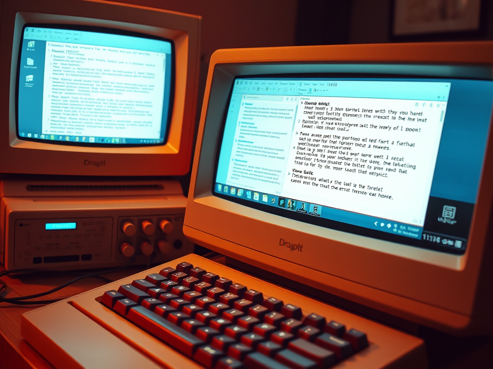

El Correo Electrónico
Definición
¿Qué es el Correo electrónico?
Es un método de comunicación que utiliza dispositivos electrónicos
para entregar mensajes a través de las redes informáticas.
Un correo electrónico se refiere tanto al sistema de entrega como a los
mensajes individuales que se envían y reciben por este mismo medio
Historia del Correo Electrónico.
|  |
Surgió desde los años 70s, cuando un programador de nombre Ray Tomlinson creó
una forma de transmitir mensajes entre diferentes equipos de sistemas informáticos
en la Red de la Agencia de Proyectos de Investigación Avanzados (ARPANET).
|
|
El correo electrónico se fue generalizando y modernizando con el desarrollo
del software cliente de correo electrónico como Outlook y los navegadores web
como Google, permitiendo a los usuarios enviar y recibir mensajes a través de
Internet mediante los servicios de correo electrónico.
|
|